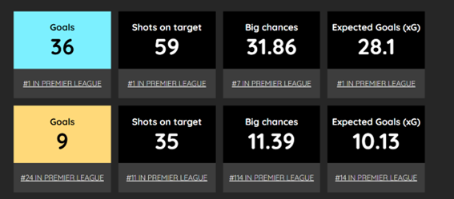
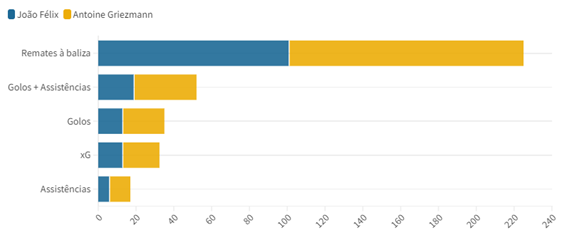

No futebol mundial, avaliação de um desempenho é muito mais que um preço, o sítio para onde um jogador vai é fundamental. Isto para entrar no caso mais flagrante, que deu azo a muitas comparações: o caso Darwin e Haaland.
O avançado uruguaio foi a grande aquisição do Liverpool no mercado de 22/23, enquanto que Erling Haaland foi a do Man City. Darwin, vindo do SL Benfica, chegou à cidade dos Beatles por um valor a rondar os 80 milhões de euros, o segundo avançado mais caro de todo o mercado. Erling Haaland, proveniente da Alemanha, custou 60 milhões de euros. As duas maiores equipas de Inglaterra, que na época 21/22 foram 2.º e 1.º classificados respetivamente, num campeonato disputado até à última. Logo, a expetativa era grande, com estas duas figuras a serem vistas como a grande esperança de cada equipa.
Comparando o que foi o desempenho entre os dois, não foi tão equilibrado quanto o valor das transferências. Haaland foi um consensual jogador do ano da Liga Inglesa, enquanto que Darwin roçou o ‘flop’, embora não se possa dizer que tenha sido tão mau.
One versus one
A diferença de golos é absurda. Um jogador, de um lado, mostrou que o seu investimento fez sentido e dominou a liga com 36 golos marcados (bateu inclusive o recorde numa só época), enquanto que o outro custou mais 20 milhões de euros e não chegou sequer aos dez golos.
Ainda assim, há que olhar para o que está à volta de cada um. O avançado norueguês do Manchester City foi para uma máquina já bem oleada, que tinha conquistado quatro campeonatos nos últimos cinco anos, e que não passou por nenhuma mudança estrutural significativa. No caso de Darwin, encontrou uma equipa a regenerar-se e que tinha perdido um jogador importante em Sadio Mané.
Como é percetível no gráfico, o Manchester City nos últimos três anos, dois deles sem Haaland, foi sempre uma equipa muito regular a nível pontual. Em 21/22 fez mais pontos do que com Haaland, inclusive. O Liverpool não é o mesmo caso, com a época 20/21 a não ser tão boa a nível de pontos, que culminou num quarto lugar, e apesar da boa época 21/22, não conseguiu dar seguimento. Darwin também contribuiu para isso, mas a falta de regularidade dos últimos anos não pode ser atribuída só a uma pessoa.
Não só de avançados se faz essas comparações. Em 18/19, o mercado trouxe as duas contratações mais caras no que diz respeito a guarda-redes da história do futebol mundial. Kepa Arrizabala, por 80 milhões de euros, e Alisson, por 62 milhões de euros, bateram esse recorde.
No entanto, os dois guarda-redes tiveram um rendimento muito diferente. Neste caso, passados já quatro anos é difícil não chegar a um veredicto: Alisson foi um sucesso redundante e Kepa esteve muito aquém das expetativas.
Em quatro épocas de Liga Inglesa, os números não mentem. Kepa chegou por um valor alto, até para substituir Thibaut Courtois, uma chamada ‘panic buy’ que não teve o sucesso esperado.
Comparando a época coletiva em que os dois fizeram mais jogos (2018/2019), as ações defensivas das equipas ajudam a explicar alguns números. Mas ainda assim é notório que Kepa teve uma underperformance grande, mesmo em épocas que a sua equipa teve qualidade defensiva.
O guarda-redes espanhol chegou a perder a titularidade em duas épocas, o que demonstra o fracasso da sua contratação num nível mais profundo.
Há casos em que dois casos são um desastre autêntico. É o caso de João Félix x António Griezmann, em 2019/2020. Félix por 127 milhões de euros e Griezmann por 120, um para o Atlético Madrid e FC Barcelona, dois rivais da Liga Espanhola.
Ambos num contexto difícil, jogadores que produziram bastante nos seus antigos clubes, mas que tiveram dificuldades a adaptar-se a um contexto diferente.
Nos seus antigos clubes, apresentavam um bom desempenho.
Será que perderam as qualidades de uma época para a outra? Certamente que não, no entanto os clubes para onde foram estiveram intrinsecamente ligados a uma época de insucesso, que não ajudou a potenciar as suas qualidades.
Claro que por vezes existem erros e os clubes pagam a mais por jogadores, no entanto há casos e casos e os jogadores estão sempre dependentes do contexto.